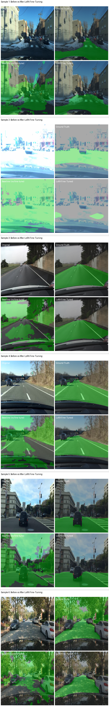

LaneGuard: Drivable Area Segmentation with Calibrated Uncertainty
Every frame, a self-driving car needs to answer one question: which pixels in this camera image are road I can safely drive on? This is drivable area segmentation. A 1280x720 dashcam image goes in, a binary mask comes out. Every pixel is either "drivable" or "not drivable."
Modern segmentation models are good at this. But they have a problem the accuracy number hides. When the model outputs 0.97 confidence on a pixel, that number is not a probability. Softmax outputs are normalized scores, not calibrated probabilities. A model trained on sunny highways will output 0.99 confidence on a snow-covered road it has never seen, because it lacks the experience to be uncertain.
I built this system to address both problems: accurate segmentation through efficient fine-tuning, and honest uncertainty through conformal prediction. The model should know what it knows, and more importantly, it should know what it does not know.
SegFormer is NVIDIA's efficient segmentation architecture. The B0 variant is the smallest, with 3.8M parameters. It uses a Mix Transformer (MiT-B0) encoder with 4 hierarchical stages, each processing the image at a different resolution. Unlike standard Vision Transformers that work at a single scale, MiT progressively reduces spatial resolution while increasing channel depth. This gives it both fine-grained detail and high-level semantic understanding.
H/4 × W/4 × 32
H/8 × W/8 × 64
H/16 × W/16 × 160
H/32 × W/32 × 256
to H/4 × W/4 × 256
(drivable / not)
Binary mask
The key design choice: overlapping patch embeddings instead of ViT's fixed-size patches. Each stage uses a strided convolution to create patches, with overlap that preserves local continuity. This is why SegFormer works well for dense prediction, where neighboring pixels matter.
Each encoder stage contains self-attention blocks with an efficient reduction ratio (reducing the key/value sequence length to keep attention tractable at high resolutions). The decoder is deliberately simple: four MLP layers that unify the multi-scale features, followed by a classification head. No complex feature pyramid. No attention in the decoder. The encoder does the heavy lifting.
I chose SegFormer-B0 over larger variants because 3.8M parameters fit on CPU and edge devices while being sufficient for binary drivable-area segmentation. The Mix Transformer encoder already understands road scenes from Cityscapes pretraining. For a two-class task (drivable vs not), the smallest variant captures enough spatial hierarchy without the overhead of B2 or B5.
The pretrained encoder already understands road scenes from Cityscapes. Full fine-tuning would update all 3.8M parameters, but most of them encode general visual knowledge that transfers directly. What needs to change is the task-specific attention routing: how the model decides which features are relevant for binary drivable-area segmentation instead of 19-class semantic segmentation.
LoRA freezes the entire pretrained model and injects small trainable matrices into the attention layers. Instead of updating a weight matrix W directly, I add two small matrices A and B such that the effective weight becomes W + BA, where BA has rank 16. The formula: output = W(x) + B(A(dropout(x))) * (alpha/r). The scaling factor alpha/r = 32/16 = 2.0 controls how much the adaptation influences the output.
HuggingFace PEFT does not natively support SegFormer's attention architecture, so I wrote the LoRA injection from scratch. Every Query, Key, Value, and Dense projection in every self-attention block across all 4 encoder stages gets a parallel low-rank path.
LoRA r=16
LoRA r=16
LoRA r=16
LoRA r=16
The 526K trainable parameters include both the 131K LoRA adapters and the ~395K decode head weights (which were randomly reinitialized for 2-class output). The entire encoder is frozen. The inject_lora_into_attention() function walks the model tree, finds every nn.Linear named query, key, value, or dense, and wraps it with a LoRALinear module. One function, 32 injection points, scales automatically across all stages.
I chose to implement LoRA manually rather than using HuggingFace PEFT because PEFT does not support SegFormer's attention architecture. Manual injection into all Q, K, V, and Dense projections (rank=16, alpha=32, scaling factor 2.0) gives full control over which layers adapt. Kaiming init on the A matrix and zero init on B means the adapters start as identity and gradually learn task-specific routing. Only 131K LoRA parameters (3.4% of the total 3.8M) are trainable.
Before training anything, I ran a controlled experiment. Take the pretrained SegFormer-B0, replace the 19-class decode head with a randomly initialized 2-class head, and run it on 100 validation images. This is the baseline: what you get from transfer learning with zero task-specific training. Then inject LoRA, train for 3 epochs on 200 images at 256x256, on a CPU, in under 5 minutes.
| Metric | Baseline (frozen) | LoRA (3 epochs) | Gain |
|---|---|---|---|
| Mean IoU | 0.380 | 0.806 | +112% |
| Drivable IoU | 0.295 | 0.702 | +138% |
| Non-drivable IoU | 0.464 | 0.910 | +96% |
| Val Loss | 0.685 | 0.180 | -74% |
| Training time (CPU) | - | 286 sec |

The baseline scores 0.380 mIoU because the randomly initialized decode head has no idea what to do with the encoder features. The encoder sees roads perfectly fine (it was pretrained on Cityscapes), but the head cannot translate those features into a binary decision. LoRA adapts the encoder's attention routing to steer features more effectively toward the new head. Three epochs is enough to learn the mapping.
The model now produces sharp masks with 0.806 Mean IoU. But IoU does not tell you which pixels the model is guessing on. A softmax score of 0.95 does not mean "95% chance this is correct." It means the logit gap was large. A model trained on sunny highways will output 0.99 on a snow-covered road because it lacks the experience to doubt itself.
Conformal prediction fixes this with a mathematical guarantee. Instead of a single class per pixel, you get a prediction set that is guaranteed to contain the true class with probability ≥ 1-α. For binary segmentation, this is clean: set size 1 means the model is confident, set size 2 means it does not know. The set size is the uncertainty map.
on held-out images
with finite-sample correction
P(class) ≥ 1 - q̂
One class passes threshold
Both classes pass, flag for review
The mechanism is straightforward. On a calibration set (held-out data), compute a non-conformity score for each pixel: 1 minus the softmax probability for the true class. Take the (1-α) quantile of all scores, with a finite-sample correction. This gives threshold q̂. At inference, include every class whose softmax probability exceeds 1-q̂. The uncertain pixels (where both classes make the cut) are exactly where the model's decision boundary is weak.
I chose conformal prediction over softmax thresholding because softmax scores are not calibrated probabilities. A model can output 0.95 confidence and be wrong 30% of the time. Conformal prediction provides a mathematical coverage guarantee: the true class is in the prediction set with probability at least 1 minus alpha, regardless of the model's calibration quality. For safety-critical perception, a guarantee beats a heuristic.
A segmentation mask in camera perspective is useful for visualization. A path planner needs meters, not pixels. "Is there drivable road 10 meters ahead and 2 meters to the left?" requires transforming the mask into a top-down Bird's Eye View.
I use Inverse Perspective Mapping (IPM), a classical homography approach. Under the flat-ground assumption (z=0), a 3x3 matrix maps camera pixels to positions in a metric ground plane. No neural network needed, pure geometry. The camera is modeled at 1.5m height with 0.05 radians (~2.9 degrees) downward pitch, matching typical BDD100K dashcam placement.
I chose Inverse Perspective Mapping over learned BEV methods (BEVFormer, LSS) because IPM is pure geometry: zero parameters, fully interpretable, and deterministic. It assumes a flat ground plane, which holds for typical urban driving. Learned BEV handles hills and uneven terrain but adds model complexity and failure modes that are hard to diagnose in safety-critical systems. The BEV grid covers 20x20 meters at 10cm resolution, with a 3m to 50m forward range.
BDD100K dashcam
128×128 logits → mask
set size per pixel
±10m × 3-50m
| Parameter | Value | Why |
|---|---|---|
| Grid size | 200 × 200 px | 1 pixel = 10cm resolution |
| Lateral range | -10m to +10m | Covers two lanes plus shoulder |
| Forward range | 3m to 50m | Near: avoid ego vehicle. Far: planning horizon |
| Camera height | 1.5m | Standard dashcam mount |
| Camera pitch | 0.05 rad (2.9°) | Slight downward angle, typical BDD100K |
| Interpolation | Bilinear / F.grid_sample | NumPy for CPU, PyTorch for GPU batch |
I chose 145 tests across 13 modules because in safety-critical perception, untested code is undeployable code. The CI pipeline enforces lint (ruff), typecheck (mypy), test (pytest), then build (Docker). Broken code cannot produce a container image. Tests cover model forward and backward passes, LoRA parameter tracking, corrupt file handling, BEV homography math, IoU computation, and cloud deployment scripts.
Small evaluation scale. The reported 0.806 mIoU comes from 200 training images at 256x256 resolution over 3 epochs on CPU. This is a controlled LoRA evaluation experiment, not full-scale training. The full pipeline (7,000 images, 512x512, NVIDIA T4 GPU, 15 epochs) is designed but results are not yet reported. The 0.806 number is real, but it is from a deliberately constrained setup.
No per-image camera calibration. BDD100K does not provide exact camera intrinsics per image. Focal length is estimated as 0.8 times image width, and camera height is fixed at 1.5m. Different vehicles and dashcam mounts would need per-vehicle calibration or vanishing point estimation for accurate BEV projection.
Static conformal calibration. The non-conformity threshold is computed once on a held-out calibration set (5% of data) and fixed at serving time. If the input distribution shifts (nighttime images after daytime calibration), the coverage guarantee weakens. An adaptive conformal approach with a rolling calibration window would maintain the guarantee under distribution shift.